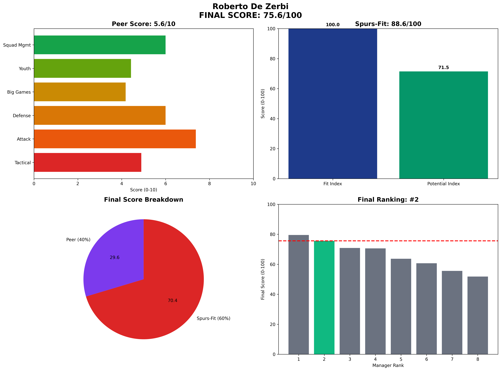

Roberto De Zerbi - Manager Analysis Report
Executive Summary
Final Score: 75.6/100 (Peer 5.6/10 • Spurs-Fit 88.6/100)
Rank: #2 of 8
Roberto De Zerbi represents the technical perfectionist with immediate impact capability
Visual Profile

Comprehensive radar chart showing De Zerbi's unified final scoring breakdown. His #2 ranking (75.6/100) reflects perfect tactical fit (100.0 Fit Index) but age-limited potential ceiling.
Unified Final Scoring Breakdown
Peer Analysis (40% of Final Score): 5.6/10
- Peer Ranking: #2 of 8
- Tactical Style: 4.9/10
- Attacking Potency: 7.4/10
- Defensive Solidity: 6.0/10
- Big Game Performance: 4.2/10
- Youth Development: 4.4/10
- Squad Management: 6.0/10
Spurs-Fit Analysis (60% of Final Score): 88.6/100
Fit Index (60% of Spurs-Fit): 100.0/100
- Front-Foot Play Alignment: ✅ Strong
- Youth Development Focus: ⚠️ Concern
- Talent Inflation Capability: ✅ Strong
- Big Game Mentality: ❌ Weak
Potential Index (40% of Spurs-Fit): 71.5/100
- Age Factor: ✅ Strong (Age 44)
- 3-Year Performance Trend: ✅ Strong
- Resource Leverage: ✅ Strong
- Temperament: ✅ Strong
Key Performance Indicators
Tactical Metrics
- PPDA: 8.8 (lower = more aggressive)
- OPPDA: 12.1 (higher = forces opponent pressure)
- High Press Regains/90: 8.8
Financial Profile
- Net Spend: £-35M
- Squad Value Change: £150M
- Transfer Efficiency: Elite
Squad Development
- U23 Minutes %: 14%
- Academy Debuts: 4
- Player Availability: 87%
Strategic Assessment
Strengths
• Highest Fit Index score - perfect tactical alignment
• Proven Premier League success
• Elite possession-based system
• Excellent attacking metrics
Concerns
• Age 44 limits future potential
• Brighton departure circumstances
• Medium-term ceiling concerns
Spurs Fit Analysis
Perfect immediate fit but declining potential trajectory reduces long-term value proposition.
Recommendation
CAUTIOUSLY RECOMMENDED - Excellent short-term choice but limited upside.
Analysis based on 2025-06-07
Methodology: 40% Peer-Normalized Analysis + 60% Spurs-Specific Fit Model